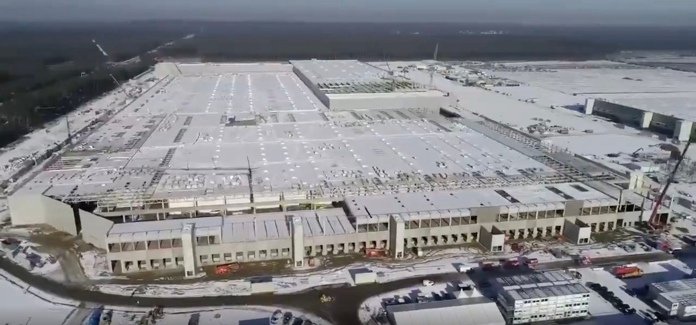

German newspaper encourages people to literally bet against Tesla (TSLA) in insane article

German newspaper Frankfurter Allgemeine published a fairly crazy article in which it literally encouraged readers to bet against Tesla (TSLA) through a short position in order to bring Elon Musk “to his knees.”
Tesla has had a long history with short sellers, which are people who take short positions on stock betting that it will go down.
At times, Tesla’s stock was the most shorted stock on the Nasdaq with billions of dollars in bets against them.
CEO Elon Musk loves taunting the short sellers – even sending one of them short shorts at some point and warning them that a “tsunami of pain” is coming for them if they hold their positions.
He was right. Tesla’s stock has gained a lot in value over the last few years and the shorts have slowed down and reduced their position in Tesla.
But economy columnist Daniel Mohr, who works for the Frankfurter Allgemeine newspaper, wants to change that.
He posted an article called “How to bet against Elon Musk” in which he encourages readers to bet with Tesla in one of the most dangerous ways: put warrants.